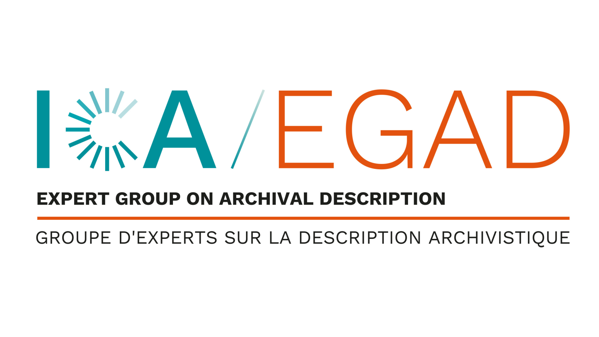

Use the green button to edit the resource (moderated: it may take a few days before changes appear).
A free online course on Records in Contexts, with 15 modules and self-enrolment. Nine core modules go from the four ICA description standards (ISAD(G), ISAAR(CPF), ISDF, ISDIAH) to the RiC conceptual model and ontology: entities, relations, dates, places and the RiC-O graph. Six advanced modules cover RiC-O in more depth, SPARQL queries over a live RiC-O dataset, and the RiC-AG crosswalk. Each module has short videos with captions, a guide, a hands-on exercise on a public demo with fictitious practice data, and a five-question check. A marked capstone leads to a certificate. The course is part of a free standards track on the same site, with separate courses on ISAD(G), ISAAR(CPF), ISDF, ISDIAH, and EAD and EAC-CPF. (English)
Open since 16 November 2026. Will be updated for RiC-O 1.2 when it is released.